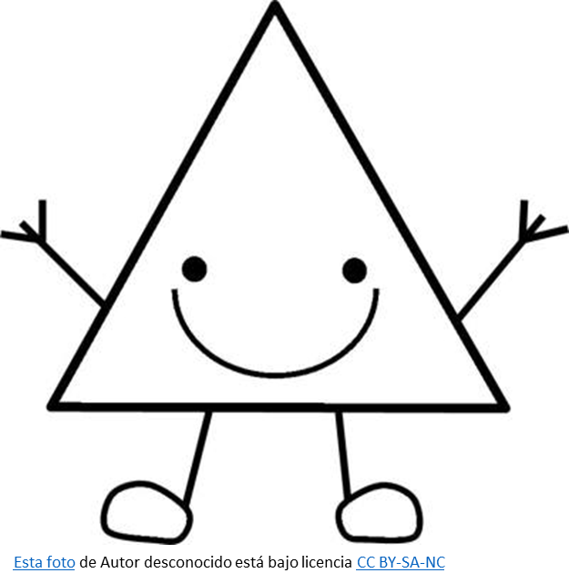
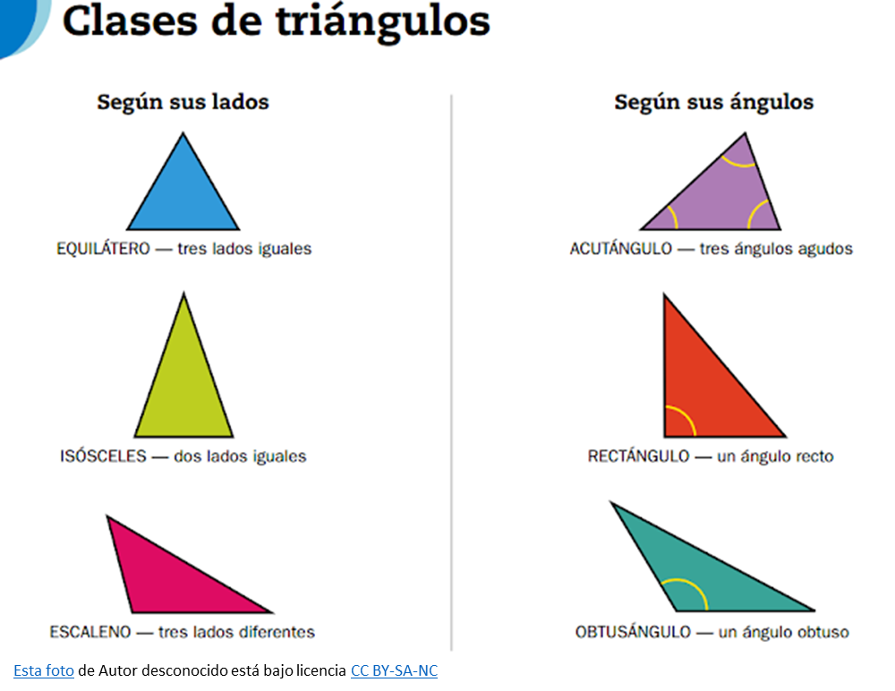

Figuras Geométricas
Una figura geométrica es un conjunto no vacío y cerrado de puntos, delimitados por un conjunto de líneas (lados) que unen dichos puntos de una manera específica. Las primeras figuras geométricas que conocemos son las figuras en dos dimensiones.
Triángulo

Un triángulo es una figura geométrica plana compuesta por tres lados y tres ángulos.
Clases de Triángulos

Clasificación según los lados:
Los triángulos se clasifican según sus lados en equiláteros, isósceles y escalenos. Los triángulos equiláteros tienen todos sus lados de la misma longitud, los isósceles tienen dos lados iguales y uno diferente, y los escalenos tienen todos sus lados de diferentes longitudes.
Triángulo Equilátero:
Un triángulo equilátero tiene sus tres lados iguales en longitud. Por lo tanto, sus tres ángulos internos también son iguales, cada uno midiendo 60 grados.
Triángulo Isósceles:
Un triángulo isósceles tiene dos lados de la misma longitud (congruentes) y un tercer lado de longitud diferente. Los ángulos opuestos a los lados iguales también son iguales.
Triángulo Escaleno:
Un triángulo escaleno tiene todos sus lados de longitudes diferentes. Como consecuencia, todos sus ángulos internos también tienen medidas diferentes.
Clasificación según sus ángulos
Los triángulos se clasifican según sus ángulos en: acutángulos, rectángulos y obtusángulos. Los triángulos acutángulos tienen tres ángulos agudos (menores a 90°), los rectángulos tienen un ángulo recto (90°), y los obtusángulos tienen un ángulo obtuso (mayor a 90°).
Triángulo acutángulo:
Todos sus tres ángulos interiores son menores a 90 grados.
Triángulo rectángulo:
Tiene un ángulo interior que mide exactamente 90 grados. Los otros dos ángulos son agudos y complementarios, es decir, suman 90 grados.
Triángulo obtusángulo:
Tiene un ángulo interior que mide más de 90 grados. Los otros dos ángulos son agudos.
{kind=link}
{kind=link}
{kind=link}
{kind=link}
{kind=link}
{kind=link}
{kind=link}
.jpeg){kind=link}
{kind=link}
{kind=link}